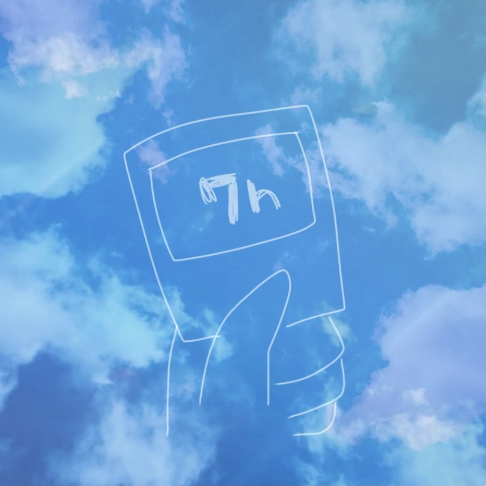

Profile

7h
高校生の時にiPhoneで写真を撮り始めてから現在もiPhoneで日常を撮り続けている。
写真を見た人の心や生活がワクワクするような写真を撮れたらいいなと思っている。
22歳/神奈川大学3年在籍中/道用ゼミ所属中
好きな食べ物/オムライス・蜂蜜・紅茶・洋菓子
好きなアーティストetc.../RAISE A SUIREN・ヨルシカ・Orangestar・Claris
高校生の時にiPhoneで写真を撮り始めてから現在もiPhoneで日常を撮り続けている。
写真を見た人の心や生活がワクワクするような写真を撮れたらいいなと思っている。
22歳/神奈川大学3年在籍中/道用ゼミ所属中
好きな食べ物/オムライス・蜂蜜・紅茶・洋菓子
好きなアーティストetc.../RAISE A SUIREN・ヨルシカ・Orangestar・Claris